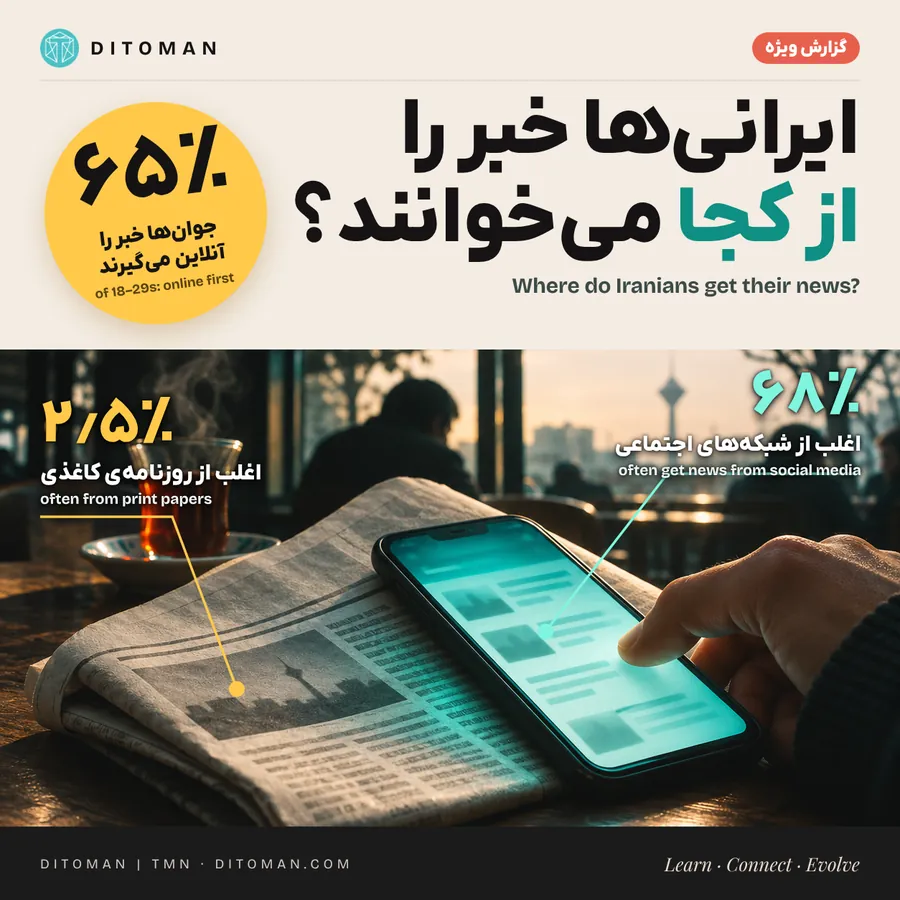
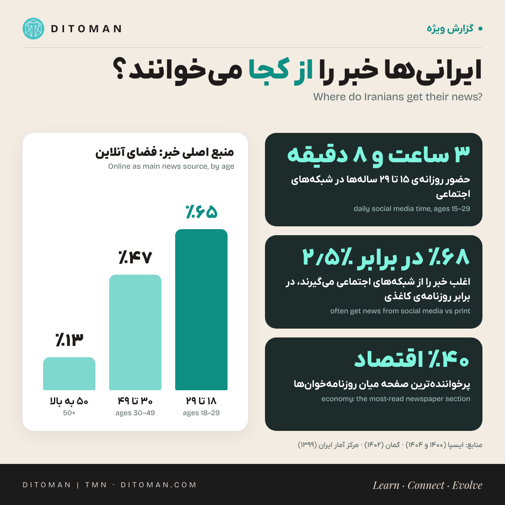

ایرانیها خبر را از کجا میخوانند؟
Where do Iranians get their news?
Online, messengers, newspapers and magazines: who reads what, by age and education, and which topics people follow most.
آنلاین، پیامرسان، روزنامه و مجله: چه کسی، با چه سن و تحصیلاتی، چه چیزی میخواند و کدام موضوعها بیشتر دنبال میشود.
از هر سه جوان ایرانی، دو نفر خبر را اول از فضای آنلاین میگیرند. در میان بالای ۵۰ سالهها، از هر هشت نفر یک نفر.
شاید زیاد بشنوید که «دیگر کسی خبر نمیخواند». عددها چیز دیگری میگویند: مخاطب ایرانی با خبر قهر نکرده، فقط جای خواندنش را عوض کرده است. در پیمایش ۱۴۰۴ ایسپا، ۴۷٫۳٪ کاربران شبکههای اجتماعی گفتند برای خبر و اطلاعات سراغ این شبکهها میروند؛ دقیقاً به اندازهی کسانی که برای سرگرمی میروند (۴۷٫۲٪). یعنی کنجکاوی هست؛ سؤال این است که خبر کجا و چطور به دست مخاطب میرسد.
این گزارش چند پیمایش معتبر را کنار هم میگذارد و هر جا داده قدیمی یا ناقص است، همین را صریح میگوید.
۰۱. چه کسانی خبر را آنلاین دنبال میکنند؟

در پیمایش ملی تلفنی ایسپا در شهریور ۱۴۰۰، از ۱٬۵۸۱ نفر خواسته شد فقط یک منبع اصلی برای پیگیری خبر انتخاب کنند. «فضای مجازی» در این سؤال هم سایتهای خبری را شامل میشد و هم شبکههای اجتماعی. سهم کسانی که آنلاین را منبع اصلی خبر میدانستند:
| گروه | آنلاین، منبع اصلی خبر |
|---|---|
| کل پاسخدهندگان | ۴۱٫۴٪ |
| ۱۸ تا ۲۹ سال | ۶۴٫۸٪ |
| ۳۰ تا ۴۹ سال | ۴۶٫۵٪ |
| ۵۰ سال به بالا | ۱۳٫۲٪ |
| تحصیلات دانشگاهی | ۶۰٫۵٪ |
| دیپلم | ۴۲٫۵٪ |
| زیر دیپلم | ۲۰٫۳٪ |
| مردان | ۴۷٫۲٪ |
| زنان | ۳۷٫۳٪ |
- این درصدها درون هر گروه حساب شدهاند: ۶۴٫۸٪ یعنی ۶۴٫۸٪ از جوانها، نه سهم جوانها از کل مخاطبان آنلاین.
- دو شکاف روشن است: سن (۶۵٪ در برابر ۱۳٪) و تحصیلات (۶۰٪ در برابر ۲۰٪).
- این تفکیک مربوط به ۱۴۰۰ است. با گسترش اینترنت همراه، احتمالاً عددها امروز بالاترند، ولی دادهی تفکیکی تازهتری پیدا نکردیم.
۰۲. هر نسل چقدر در شبکههای اجتماعی است؟
طبق پیمایش شهریور ۱۴۰۴ ایسپا، میانگین حضور روزانه در شبکههای اجتماعی:
- ۱۵ تا ۲۹ سالهها: ۳ ساعت و ۸ دقیقه
- ۳۰ تا ۴۹ سالهها: ۲ ساعت و ۱۶ دقیقه
- ۵۰ سال به بالا: حدود یک ساعت
این زمان همهی فعالیتها را میشمارد، نه فقط خبر خواندن را.
۰۳. پیامرسان، مسیر اول خبر
در گزارش یکتانت و EMRC (۱۴۰۴ و بهار ۱۴۰۵، با ۹۵۹ پاسخدهنده)، پیامرسانها مسیر اول دریافت خبر بودند؛ بعد دوستان و آشنایان و سپس سایتهای خبری. برای جوانترها فیلم، موسیقی و سرگرمی پررنگتر بود؛ برای میانسالترها خبر، کنار ارتباط با خانواده و خدمات بانکی. یعنی برای نسل میانسال، خبر یکی از دلیلهای اصلی آنلاین شدن است.
۰۴. چه موضوعهایی بیشتر خوانده میشود؟
در طرح «فرهنگ رفتاری خانوار» مرکز آمار (۱۳۹۹)، ۲۲٫۴٪ افراد ۱۵ سال به بالا گفتند روزنامهی چاپی یا الکترونیکی خواندهاند. میان همین روزنامهخوانها، صفحههایی که میخواندند (هر نفر میتوانست چند موضوع انتخاب کند):
| صفحه | سهم از روزنامهخوانها |
|---|---|
| اقتصاد | ۴۰٫۴٪ |
| اجتماعی | ۳۶٫۷٪ |
| ورزش | ۳۱٫۷٪ |
| بهداشت و سلامت | ۳۰٫۸٪ |
| سیاست | ۳۰٫۴٪ |
| حوادث | ۲۱٫۱٪ |
اقتصاد در صدر است. در پایش محتوای پیامرسانهای داخلی در مهر ۱۴۰۵ هم موضوعهای جیبی پررنگ بودند: قیمت طلای ۱۸ عیار در ایتا و دلار و تتر در بله؛ و در سروشپلاس، داستانهای دنبالهدار خانوادگی. موضوع داغ به سکو و زمان بستگی دارد.
۰۵. روزنامه و مجلهی کاغذی کجا ایستادهاند؟
- روزنامهی چاپی برای خبر: در پیمایش آنلاین و وزندهیشدهی گمان (۱۴۰۲) از بزرگسالان باسواد ساکن ایران، ۲٫۵٪ گفتند اغلب برای خبر سراغ روزنامهی چاپی میروند، ۹٫۸٪ گاهی، ۲۹٫۲٪ بهندرت و ۵۸٫۵٪ هرگز. در همان سؤال، ۶۸٫۲٪ گفتند اغلب از شبکههای اجتماعی خبر میگیرند. چون نمونه آنلاین بوده، سهم آنلاینها احتمالاً در آن بیشتر از کل جامعه است.
- مجله: طبق پیمایش ملی مصرف کالاهای فرهنگی (۱۳۹۸)، ۲۸٫۳٪ روزنامه یا مجله میخواندند و ۱۱٫۹٪ نسخهی الکترونیکی آن را. چون روزنامه و مجله در یک سؤال آمدهاند، سهم مجله بهتنهایی معلوم نیست.
- تعداد رسانهها: طبق سامانهی جامع رسانهها (به نقل ایرانگاه، مهر ۱۴۰۵) ۱۸٬۱۱۶ مجوز رسانه ثبت شده: ۷٬۸۳۲ رسانهی برخط، ۶٬۰۹۸ چاپی و ۴٬۱۸۶ نشریهی الکترونیکی غیربرخط. این تعداد مجوز است، نه تیراژ یا مخاطب واقعی.
چه چیزهایی را هنوز نمیدانیم
آمار ملی تازه و جداگانهای برای خوانندگان مجلهی چاپی، مجلهی دیجیتال و مقالهی بلند پیدا نکردیم. دادههای عمومی هم نمیگویند کدام گروه بیشتر مقالهی کامل را تا آخر میخواند. پیمایشها روشهای متفاوتی دارند (تلفنی، حضوری، آنلاین) و مستقیم با هم جمعپذیر نیستند.
۰۶. نگاه دیتومان
تصویر روشن است: خبر از روزنامه به گوشی کوچ کرده، ولی مخاطب کنجکاو سر جایش است. جوانها بیشتر آنلایناند، میانسالها برای خبر آنلاین میشوند و اقتصاد روزمره در هر دو گروه پرخواننده است. خبری که ساده، دقیق، با عدد و منبع، و در همان جایی باشد که مردم هستند، خواننده پیدا میکند؛ و کسی که بخواهد عمیقتر بداند، تا آخر مقاله هم میآید. ما هم همین مسیر را با هم دنبال میکنیم: خلاصه در تلگرام و اینستاگرام، گزارش کامل روی سایت.
منابع
- مرکز افکارسنجی دانشجویان ایران (ایسپا): پیمایش ملی تلفنی منابع خبری، شهریور ۱۴۰۰ (۱٬۵۸۱ نفر)
- ایسپا: پیمایش استفاده از شبکههای اجتماعی، شهریور ۱۴۰۴
- یکتانت و EMRC: گزارش رفتار کاربران اینترنت، ۱۴۰۴ و بهار ۱۴۰۵ (۹۵۹ پاسخدهنده)
- مرکز آمار ایران: طرح فرهنگ رفتاری خانوار، ۱۳۹۹
- گمان (GAMAAN): پیمایش آنلاین وزندهیشده، ۱۴۰۲
- پیمایش ملی مصرف کالاهای فرهنگی، ۱۳۹۸ (به نقل بازنشر نتایج)
- ایرانگاه، بر پایهی سامانهی جامع رسانهها، مهر ۱۴۰۵؛ پایش محتوای پیامرسانهای داخلی، مهر ۱۴۰۵
آخرین بازبینی: ۱۸ آبان ۱۴۰۵